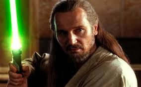
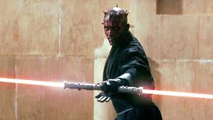
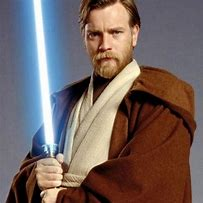
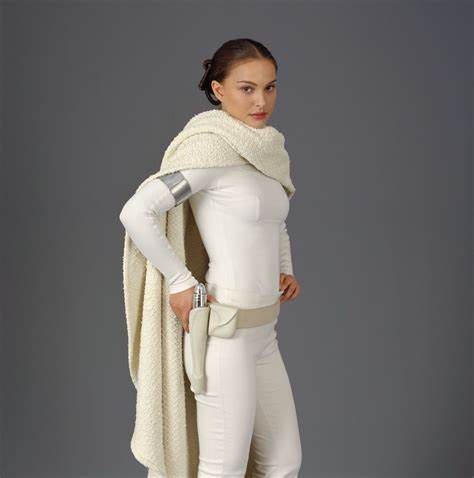
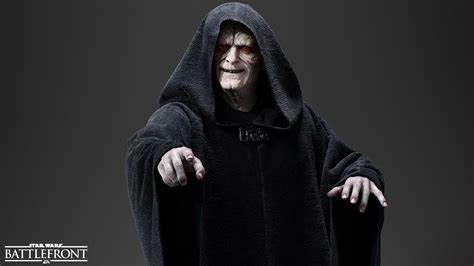
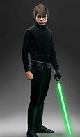
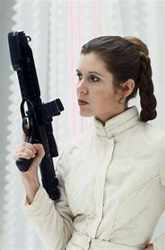

this page will list the characters in cronological order and giving brief descriptions of all of them
Qui-gon jinn

This jedi knight was trained under count dooku while he was in the jed order.
Qui-gon jinn would later have a padawan named Obi-wan kenobi.
The two would travel the galaxy helping other creatures in the name of the jedi order.
During one of their missions Obi-wan and Qui-gon would encounter a sith apperentice.
His name was Darth Maul. In a long and diffiucult battle between Qui-gon and Maul,
Maul would gain the upper hand with a stunning blunt attack followed closley by a killing blow
Many years after his death Qui-gon jinn would end up being one of the first jedi to become a force ghost
Darth Maul

Darth maul was the diect apprentice to Darth sidious(the strongest sith lord at the time).
After the battle on Naboo where Maul would get cut in half by Obi-Wan, Maul would end up on
a trash planet where he would slowly go insane, the only thing keeping him alive was his hate
Obi-Wan. Later during the clone wars Maul would be found by his brother Savage Opress. The two
night brothers would go on journeys through the galaxy erasing jedi while hunting Obi-Wan.
Savage would later die at the hands of Darth sidious. Maul would die on Tatooine at the hands of
Obi-Wan.
Obi-Wan Kenobi/Ben Kenobi.

Obi-Wan kenobi was the padawan of Qui-Gon and is the killer of Maul. He was a crucial part of the
clone wars leading the 212th battallion through all of they're victorys this includes the battle of
Yavin. His clone commander, Cody, led the 212th along side him. Obi-Wan would also liberate Mandalore
from Mauls tyrany in the 2nd phase of the clone wars. He would die to Darth Vader aboard the 1st Death
star.
Padme Amidala

Padme was the leader of Naboo until she stepped down and became part of the galactic senate. during her
reign over Naboo she would meet Anakin Skywalker. Duringn the clone wars Padme was not just a leader in the
senate but would also make daring missions on the battle field infiltrating seperatist meetings and gaining
valuble information. Padme would also become romantically involved with Anakin during the clone wars. She would
later die while giving birth to Luke and Leia.
Anakin SkyWalker
Anakin Skywalker was the apprentice of Obi-Wan and would later have his own apprentice, Ahsoka Tano, when Anakin
was very young him and his mother were sold into slavry and were owned by Watto a tridarian who lived on Tatooine.
within the same year as the start of the clone wars Anakins motehr died after a tusken raid. This feuled Anakins rage
whitch he would fight with constantly in the clone wars. During the clone wars Anakin led the 501st clone trooper legion
along side captain rex. After the clone wars Anakin would be swalloed up by his rage and anger causing him to turn into
Darth Vader. As Darth Vader he would kill the emporer during the battle of Endor. He would die on the 2nd death star after
sharing a heart felt moment with his son, Luke.
Palpatine

Before the clone wars Palpitine would be voted into power of the senate and during the clone wars he would be given emergencie
powers. During the clone wars he would manipulate Anakin to do his bidding and become great friends with him. During the last few
days of the clone wars palpitine would begin to show Anakin visions of Padme dying in child birth. When Anakin confronts Palpitine
after the battle of Corusant Palpitine reviales to Anakin that he is Darth sidious. Later thatsame day he is confronted by 4 jedi
knights and masters. He would kill them all in a few minutes. After the battle which left him deforemed he would execute order-66
which would wipe out all the jedi in the galaxy. He also turned the republic into the galactic empire. He would later die to Anakin
on the 2nd death star.
Luke Skywalker

After being born Luke was seperated from his sister Leia and sent to go live with his Aunt and Uncle on tatooine. While Luke was a
teenager he would come home to find them dead and his home scavenged. After he found his he would go off with Ben kenobi and search
for Alderaan. During the battle of Yavin Luke would be the one to destroy the death star making him a hero in the eyes of the rebellion
and a symbol of hope for the galaxy. He would fight his father several more times eventually convinving him to join the light side of
the force during the battle of Endor. He would later die peacefully in isolation watching the sunset.
Leia Organa

After being seperated at birth leia would go on to live with senator Bail Organa on Alderaan. Years later she creates the rebellion to
fight the empire and eventually the resistance to fight the first order. During the war against the empire she is forced to wathc her home
world, Alderaan, be blown up by he death star. Later during the war she meets Han Solo a scoundre whom she later falls in love with.
After the war with the empire she would begin training to be a jedi with Luke but would stop after the birht of her son Ben Solo. She would die
peacefully in her sleep trying to reach her son with the force.